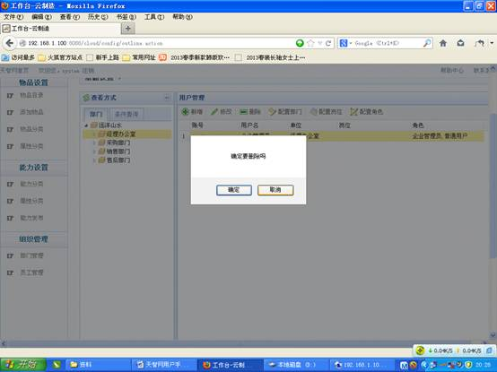
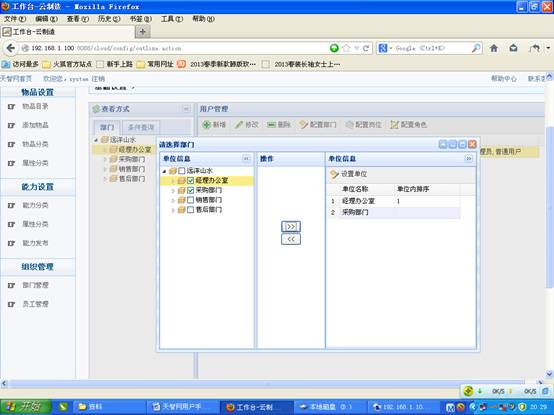

1. 部门管理
a) 点击“创建顶级部门”，填写部门结构信息；

b) 选定上级部门，点击“创建下级部门”，填写下级部门结构信息；
2. 员工管理
a) 新增用户：选中某部门，点击“新增”按钮，打开新增用户对话框，输入完成后点击保存；
b) 修改：选中用户，点击“修改”按钮，打开用户信息，修改后保存即可；

c) 删除：选中某用户，点击“删除”按钮，删除用户；

d) 配置部门：点击“配置部门”按钮，选择部门，点击操作，

e) 配置岗位：选择岗位，配置岗位

f) 配置角色：选择角色，配置角色